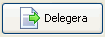
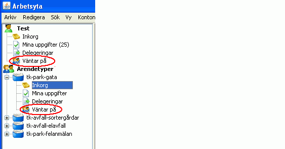
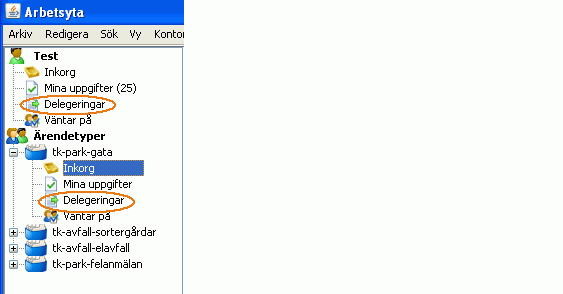
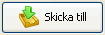

Att delegera en arbetsuppgift innebär att du vill att någon ska utföra uppgiften men att den återkopplas till dig när den du delegerat uppgiften till är färdig. Om du vill delegera ett ärende markerar du ärendet i listan genom att klicka på det och sedan klicka på knappen Delegera. I dialogrutan som kommer du upp väljer du handläggare eller Ärendetyp som du vill delegera till.
Ett ärende kan endast delegeras till en specifik handläggare om det skickas direkt från en annan handläggare. Ärenden som ägs av en viss ärendetyp kan bara delegeras till en annan ärendetyp, och aldrig till en enskild handläggare. Detta är av säkerhetsskäl så att ärendet inte ska hamna hos någon som är sjuk eller på semester m.m. Rent generellt sett bör man undvika att delegera/skicka vidare till enskilda personer, och istället använda ärendetyper och roller så långt det går.
När ett ärende delegerats hamnar det i vyn Väntar på, där kan du se vilka ärenden som delegerats och vilken status de har.

Ärenden som blivit delegerade till dig eller till en Ärendetyp hittar du i vyn Delegeringar under ditt personliga konto eller i någon av de Ärendetyper som du tillhör


Om du vill skicka ett ärende vidare till en annan Ärendetyp markerar du ärendet och klickar på knappen Skicka till. I dialogrutan som visas väljer du till vilken Ärendetyp ärendet ska skickas til. I motsats till Delegera så ger Skicka till ingen återkoppling och du har ingen vy där du ser de ärendet som du skickat. Ett ärende kan endast skickas till en Ärendetyp och aldrig till en enskild handläggare.